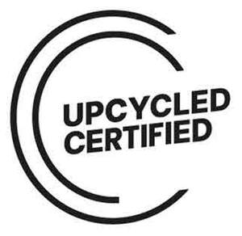

Trade Mark Journal No.2025/042 17 October 2025
UK00004243115 1 August 2025 (35,42)

- Class 35
- Retail services related to the sale of cosmetics and ingredients for cosmetics; Wholesale services in relation to cosmetics and cosmetic ingredients; Research and consultancy services in the field of cosmetics and cosmetic ingredients; Commercial information research studies; Marketing research and analysis; Marketing research or analysis; Administrative support and data processing services; Commercial information and advice services for manufacturers and consumers in the field of beauty products.
- Class 42
- Quality testing of cosmetics and ingredients for cosmetics for certification purposes; Drawing up and testing of standards, certification criteria and certification guidelines, in the field of cosmetics and ingredients for cosmetics; Certification [quality control] in the field of cosmetics and ingredients for cosmetics; Quality audits in the field of cosmetics and ingredients for cosmetics; Product safety testing and consultation in the field of cosmetics and ingredients for cosmetics; Services relating to the implementation of certification schemes, namely granting certification, assessing, verifying, auditing and monitoring compliance of standards, assessing and verifying joint programmes and projects with retail, companies and brands in the field of cosmetics and ingredients for cosmetics; Auditing and evaluating participants in certification schemes in the field of cosmetics and ingredients for cosmetics; Provision of information and advice on certification schemes in the field of cosmetics and ingredients for cosmetics; Quality management, quality control and quality assurance consultancy in the field of cosmetics and ingredients for cosmetics; Providing statements, certificates and similar documents in accordance with certification criteria, in the field of cosmetics and ingredients for cosmetics; Quality management systems, in the field of cosmetics and ingredients for cosmetics; Technical project studies, feasibility studies, technical and regulatory services relating to cosmetics and cosmetic ingredients; Testing, analysis and evaluation of the goods and services of others for the purpose of certification in the field of cosmetics and ingredients for cosmetics; Materials testing and evaluation in the field of cosmetics and ingredients for cosmetics; Process monitoring for quality assurance; Monitoring, verification and certification of conformity to regulations and standards; Chemical analysis services for use in evaluation; Testing, authentication and quality control in the field of cosmetics and ingredients for cosmetics; Technical support and research services in the field of cosmetics and ingredients for cosmetics; Research and development in the field of cosmetics and ingredients for cosmetics.
Upcycled Beauty Ltd
Representative: Wiggin LLP